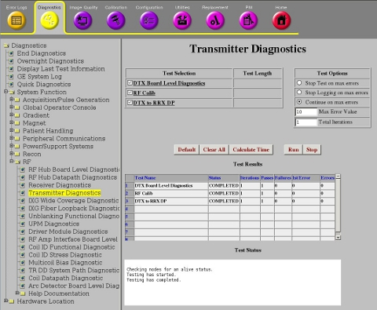
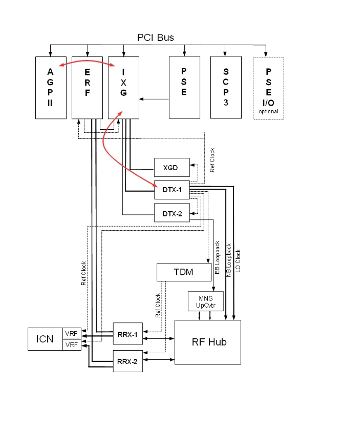

Operating Documentation
Direction 5670006, Rev# 1
Discovery MR750w GEM Service Methods
Module Version 7.0, Version Date 10/14/11
Operating Documentation |
Diagnostics >> System Function >> RF >> Transmitter Diagnostics
Diagnostics >> Hardware Location >> Pen Panel Cabinet >> Transmitter Diagnostics
Illustration 1: DTX BLD

The DTX BLD tests the fiber link between the DTX and the IXG, and the circuitry internal to each DTX module. Every system has a narrowband exciter (DTX-1). The DTX-1 module also contains a clock reference module that produces a very accurate 80MHz clock signal and a 112 MHz (3.0T) or 80MHz (1.5T) LO signal. If the broadband exciter is installed in the system, it will be tested along with the narrowband exciter by this diagnostic. The diagnostic is run from the AGP.
The fiber link between each DTX module and the IXG board.
The programmable registers and logic internal to the DTX.
Run and pass the IXG BLD before running DTX BLD.
Illustration 2: DTX Board Level Diagnostic - Standard Configuration

Illustration 3: DTX Board Level Diagnostic - With MNS

Select DTX Board Level Diagnostics from the Transmitter Diagnostics screen.
Click [Run].
Review Test Results table to see whether the diagnostics passed or failed.
Output values are judged pass or fail. In the event of failure, the details of the failure can be found in the GE System Log.